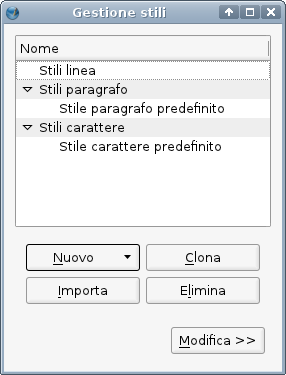
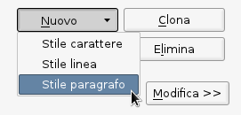
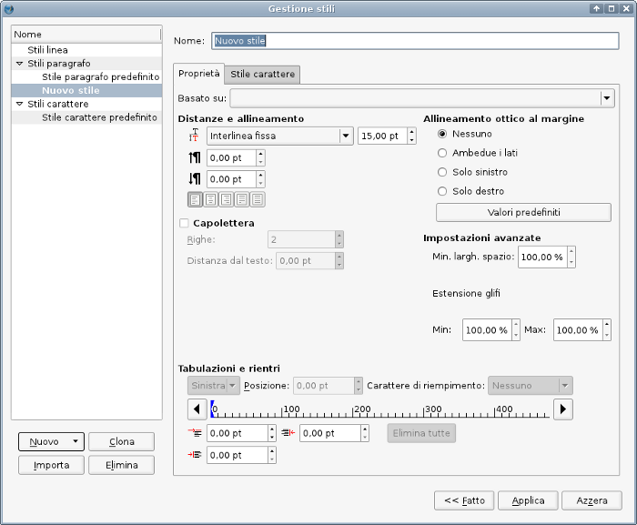
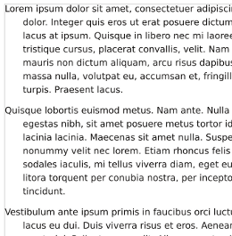
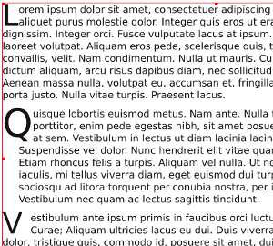
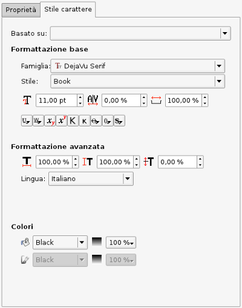

Lavorare con gli stili
Perché si dovrebbe usare gli stili, e perché sono una buona idea? E che cosa sono gli stili in Scribus?
Esistono due tipi di stile in Scribus, che vedrete se aprite la finestra di dialogo Gestione stili con Modifica > Stili. Il primo comprende gli stili di linea, che saranno descritti in Lavorare con le linee e gli stili di linea. Il secondo riguarda l'aspetto del testo e comprende due sotto-tipi, Stili di paragrafo e Stili di carattere. Per entrambi esiste uno stile predefinito, che in parte dipende dalle impostazioni predefinite per i caratteri in File > Preferenze > Strumenti > Testo, e che può anche essere modificato qui, nella finestra di gestione stili.
Gli stili di paragrafo sono applicati a un intero paragrafo di testo, come il nome suggerisce, mentre gli stili di carattere sono applicati a un certo insieme di lettere, parole, o anche a interi paragrafi di testo, indipendentemente dal loro stile di paragrafo. Forse questo può causare un po' di confusione, ma uno stile di paragrafo contiene sempre uno stile di carattere.
Perché usare gli stili? In parte per comodità, ma in parte anche per dare facilmente alle varie parti del documento un aspetto coerente. Ad esempio, per un notiziario si potrebbe voler usare un insieme preciso di attributi di carattere per intestazioni, corpo del testo, riquadri con testi secondari, e altri elementi. Un altro vantaggio degli stili è che, una volta applicati, se in seguito uno di essi viene modificato, le modifiche vengono applicate automaticamente a tutte le parti del documento in cui quello stile è usato. Inoltre, gli stili possono essere importati da altri documenti di Scribus, oppure uno stile può essere clonato e poi modificato al fine di utilizzarlo in qualche altro modo. Infine, se usate OpenOffice.org e salvate in formato ODT, gli stili creati in Writer possono essere importati e creati automaticamente in Scribus.
Dopo questa breve introduzione, cominciamo a creare qualche stile di paragrafo.
Stili di paragrafo
|  |
Quando aprite la finestra di dialogo Gestione Stili, potrebbe avere l'aspetto mostrato qui oppure potrebbe essere espansa. Supponiamo di voler creare due stili da usare in un notiziario, uno per intestazioni e titoli, e l'altro per il corpo del testo. Vogliamo che le intestazioni si distinguano chiaramente dal corpo del testo, e quest'ultimo dovrebbe avere un aspetto piacevole ed essere facilmente leggibile. Ora non discuteremo i pro e contro della scelta dei caratteri nelle diverse situazioni, poiché molti fattori possono influenzarla. |
|  |
| Fate clic sul pulsante Nuovo per aprire il menù a discesa e selezionate Stile paragrafo. Il nome predefinito sarà Nuovo stile. All'inizio sarà attiva la scheda Proprietà, che, come potete vedere, contiene le impostazioni per vari attributi dei glifi relativi a righe, altri paragrafi, margini e tabulazioni, ma nulla sul carattere stesso. |

Non descriveremo gli elementi di cui si parla già in Lavorare con il testo, ma ci concentreremo principalmente sulle impostazioni che non si trovano nella scheda Testo del pannello Proprietà.
Sotto le impostazioni dell'interlinea vi sono due caselle di controllo per impostare lo spazio bianco sopra e sotto il paragrafo per cui lo stile è usato. Lo spazio sarà sommato a quello stabilito per i paragrafi precedenti o successivi.
Sotto le impostazioni dei tabulatori (che abbiamo visto nel pannello Proprietà) vi sono tre caselle di controllo per i rientri.
In alto a sinistra si può impostare il rientro della prima riga del paragrafo rispetto al margine sinistro del paragrafo. Con un valore negativo si ottiene il cosiddetto rientro sporgente.
In basso a sinistra si può impostare il rientro dell'intero paragrafo rispetto agli altri elementi della cornice di testo: il bordo della cornice, e anche la eventuale distanza sinistra tra bordo cornice e testo, impostata nel pannello Proprietà. Questo rientro definisce il margine sinistro del paragrafo; un rientro sporgente si può impostare soltanto quando questo valore è positivo, e il valore assoluto del rientro sporgente non può essere maggiore. Esempio: se volete un rientro sporgente di -15 pt, avete bisogno che il paragrafo abbia un rientro di almeno 15 pt.
Infine, a destra, si può impostare il rientro destro dell'intero paragrafo, simile a quello sinistro di cui abbiamo appena parlato.
| Nell'esempio a destra vediamo alcuni paragrafi con rientro sporgente e dello spazio aggiuntivo al di sopra; notate che lo spazio aggiuntivo non viene applicato al primo paragrafo della cornice. |
 |
Capilettera
| Un capolettera è la prima lettera di un paragrafo, che è stata ingrandita fino ad occupare l'altezza di due o più righe di testo. Il valore di Linee deve essere un numero intero.
La Distanza dal testo definisce lo spazio vuoto a destra della lettera ingrandita; può assumere anche un valore negativo, anche se questa possibilità sembra di modesta utilità.
Qui vediamo alcuni esempi di capilettera. I primi due hanno una distanza dal testo pari a 0, e il terzo pari a 10 pt. Nel paragrafo centrale il capolettera ha l'altezza di tre righe, e ha un rientro sporgente per ottenere un effetto più elaborato.
I capilettera possono produrre effetti visivi molto interessanti, ma non si prestano a una facile leggibilità, e quindi, in generale, dovrebbero essere utilizzati con parsimonia. |
 |
Stili di carattere
| Qui vediamo la scheda Stile carattere nella finestra di Gestione stili: ora possiamo impostare i vari attributi del carattere e le alterazioni dei glifi. Quasi tutte queste impostazioni sono presenti anche nella scheda Testo del pannello Proprietà: potete trovarle descritte in Lavorare con il testo.
L'eccezione è l'ultima casella di controllo a destra nella fila superiore, dopo quella per la spaziatura. Con essa si imposta la larghezza predefinita del carattere o glifo “spazio” (ricordate che lo spazio è un glifo, ma, a differenza, una tabulazione non lo è). Non influenza lo spazio tra tutti i glifi, come fa la casella per la spaziatura, ma soltanto quello tra parole.
Se state tentando di creare uno stile di carattere non associato a uno stile di paragrafo, vedrete soltanto questa scheda con le sue opzioni. Gli stili di carattere possono essere applicati soltanto nella finestra principale. Non c'è modo di applicare uno stile di carattere nell'editor interno: là potete applicare solo uno stile di paragrafo con il suo stile di carattere associato.
C'è una gerarchia tra gli stili per il testo, e cioè uno stile di carattere prevale su uno stile di paragrafo, anche se questo è applicato a un'intera cornice, come si potrebbe fare in modalità Seleziona Elemento. Dovreste ricordarvi dell'esistenza di questa gerarchia se state tentando di applicare uno stile di paragrafo nell'editor interno e questo sembra non funzionare.
|
 |
Importare stili
| Se fate clic sul pulsante Importa nella finestra Gestione stili, si apre una finestra di dialogo in cui potete scegliere un file di Scribus da cui importare gli stili. Potete selezionare un file di qualunque tipo, ma gli stili saranno trovati soltanto nei file di Scribus, e non saranno mostrati messaggi di errore.
Come si vede qui, potrete poi scegliere quali stili desiderate importare, e assicurarvi che non vi siano conflitti di nome. Gli stili importati vengono rinominati automaticamente, ma naturalmente potete rinominarli come volete dopo l'importazione.
Suggerimento 1: potete creare dei file che contengono un documento vuoto, con un insieme di stili da utilizzare in altri documenti.
Suggerimento 2, per coloro a cui piace analizzare i file .sla: scoprirete che, al fine di importare uno stile, potete eliminare dal file tutto, tranne i seguenti elementi: <?xml...>, <SCRIBUSUTF8NEW...>,<DOCUMENT....>, <STYLE.....> (in qualunque numero siano), </DOCUMENT>, e </SCRIBUSUTF8NEW>, e da ciò che resta è ancora possibile importare gli stili. Ma non tentate di aprirlo come documento.
|
 |
Applicare gli stili
Ci sono tre modi principali con cui applicare gli stili: a tutto il testo contenuto in un riquadro, a un paragrafo alla volta, o soltanto a una parte del testo.
A tutto il testo contenuto in un riquadro
Selezionate il riquadro, poi andate nella scheda Testo del pannello Proprietà e selezionate la sottoscheda Impostazioni stile. Qui trovate due menù a discesa, uno per lo stile di paragrafo e l'altro per lo stile di carattere. Potete applicare l'uno o l'altro, o entrambi, all'intera cornice. Se applicate uno stile di carattere, esso avrà la precedenza sullo stile di carattere associato allo stile di paragrafo corrente, ma quest'ultimo continuerà a determinare caratteristiche come interlinea, rientri e tabulazioni. Per rimuovere gli effetti di uno stile di carattere o di paragrafo applicato in precedenza, dovete selezionare “Nessuno stile” nel menù a discesa.
A un paragrafo alla volta
Un modo semplice per farlo consiste nell'usare l'editor interno, in cui, a sinistra del testo si può scegliere lo stile di paragrafo per mezzo di un menù a discesa. Non è possibile applicare stili di carattere nell'editor interno. L'editor interno ha anche altre limitazioni: le modifiche devono essere applicate a un paragrafo alla volta, e non è possibile selezionare più paragrafi e applicarle a tutti. Inoltre non è possibile controllare l'effetto visuale finché non si aggiorna la cornice, anche se lo si può fare senza uscire dall'editor interno.
A una parte del testo
Questo si può fare in modalità modifica contenuto, che si attiva con l'icona sulla barra degli strumenti (da tastiera: E), o facendo doppio clic all'interno della finestra, dopodiché compare un cursore lampeggiante nel testo. Selezionate il testo con il mouse, o con una combinazione di tasti freccia e Maiusc.
Sia che selezioniate una piccola parte del testo o un intero paragrafo, quando applicate uno stile di paragrafo esso sarà applicato all'intero paragrafo. Gli stili di carattere, invece, vengono applicati solo al testo selezionato. Come detto prima, quando uno stile di carattere è applicato a una porzione di testo, uno stile di paragrafo non prevale su di esso, finché non si seleziona Nessuno stile dall'elenco degli stili di carattere.